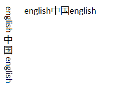

Starting with the Windows 8, DirectWrite has a number of new APIs that allow you to use vertical text in your apps.
You can draw vertical text with Direct2D by using the DrawTextLayout methods. To draw the text vertically, pass DWRITE_READING_DIRECTION_TOP_TO_BOTTOM to the IDWriteTextFormat::SetReadingDirection method and DWRITE_FLOW_DIRECTION_RIGHT_TO_LEFT to the IDWriteTextFormatSetFlowDirection method. Then you can create and draw a vertical IDWriteTextLayout object.
Every character has a preferred character orientation, or the direction that the character should be oriented in any directional layout. For example, in traditional horizontal layout, both the Latin text and the Chinese text are oriented vertically. On the other hand, in a vertical layout, the Chinese text remains upright, and the Latin text is rotated 90 degrees. This difference in orientation is seen in the example here.

To determine the orientation of the text you have, you need to implement the IDWriteTextAnalysisSink1 and IDWriteTextAnalysisSource1 interfaces. The source and sink take in the glyph runs and let you check if they are oriented vertically or not.
After you implement your source and sink, you call the AnalyzeVerticalGlyphOrientation method. In the example image, this function returns 3 runs: "English", "ä¸å›½", and "English."
Now that you know the run contains vertical glyphs, you need to get access to those glyphs. In the example so far, there are 3 runs: one with vertical glyphs and two without. To transition from characters to glyphs, you call GetGlyphIndices. This method returns the corresponding glyph indices for the characters in the example. Because the AnalyzeVerticalGlyphOrientation method returns a run with vertical glyphs, you need to call GetVerticalGlyphVariants, which returns the vertically oriented glyph IDs in place of the current glyph IDs.
Finally, you need to lay out and draw the text. Because you're drawing the text vertically, you need to get some more info so that the Latin text is drawn correctly. If you draw all of the text along the central baseline, the Latin text appears to float in the middle of the line. You need access to both the central and Roman baseline to align the text correctly. Use the IDWriteTextAnalyzer1::GetBaseline method to get the numerical values of the baselines you specify. You can subtract the Roman baseline from the central baseline to get the offset between the two.
With all this info, you can draw the text on the screen. First, call the GetGlyphOrientationTransform method with the results from the IDWriteTextAnalysisSink1 and IDWriteTextAnalysisSource1 objects.
If you’re using Direct2D you also need to set the world transform on the Direct2D render target for vertical rendering.
Finally, call DrawGlyphRun three times, once on each block of text. On the two blocks of text that are in English, you need to apply the offset that we calculated between the Roman and central baselines.
Now, the text in your app will be drawn vertically, with the correct glyph orientation.
Â
Â